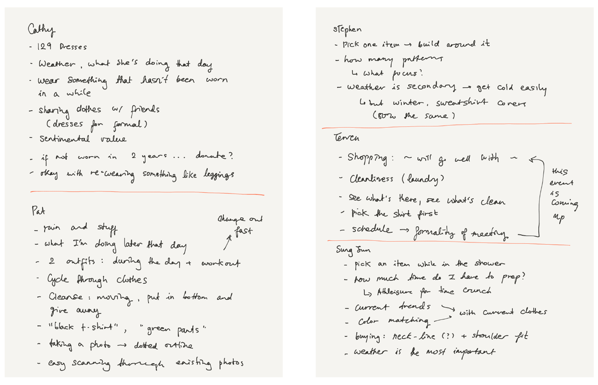
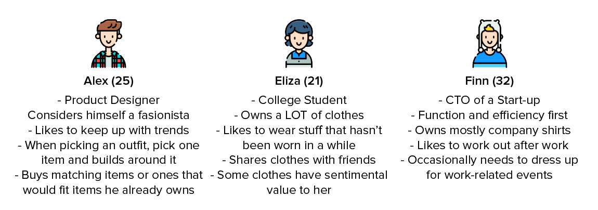
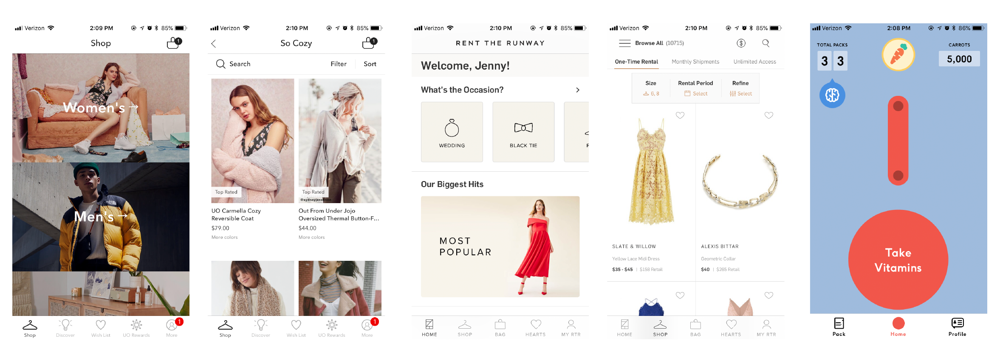
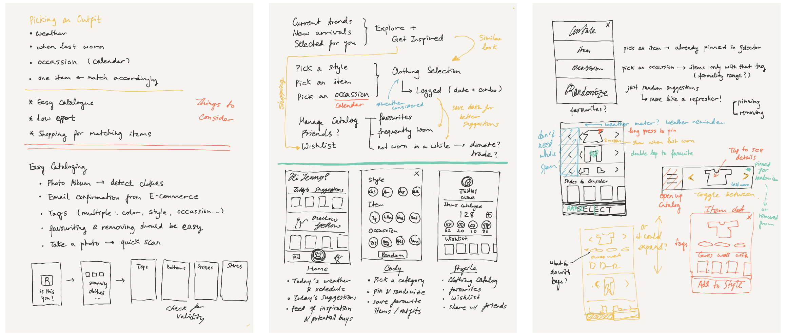
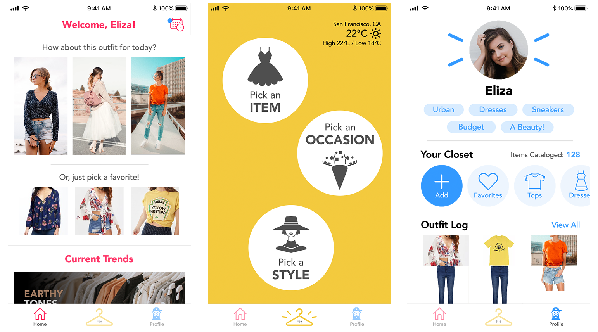
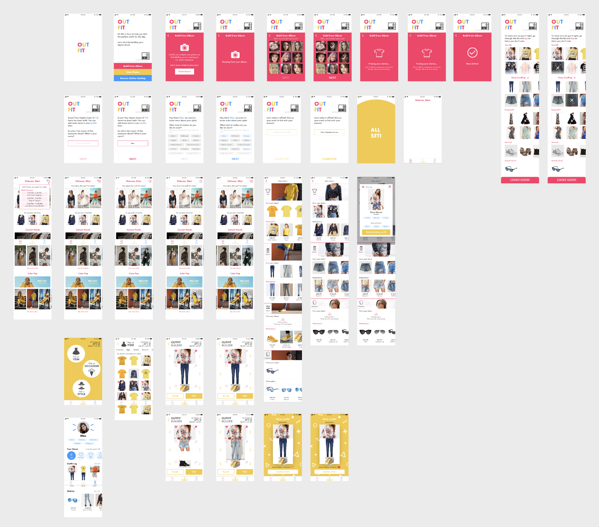

Jenny Hyun Ji Seong
Art. Design. Code.

OutFit
OutFit is a short design challenge I did over this summer. Getting accustomed to startup life (living with my co-workers) meant that I didn't really care about what I wore on a day to day basis. But when I needed to meet someone else, I would struggle. So when I came across the prompt to make an outfit selection app, I jumped on it.
User Research
I interviewed 5 individuals, 1 female and 4 male, about what they consider when they choose their clothes. The individuals’ familiarity to fashion varied—some were very picky about their clothes, some not so much. This helped me create a product which users from anywhere on the spectrum could use.
User Personas
From the interviews, I created three personas:
Icons made by Freepik from www.flaticon.com is licensed by CC 3.0 BY
Defining Features & Style
Based on the user research, I identified some key features:
Although I wasn't able to encorporate all the features listed here, they gave me a good guideline for making the sketches and prototypes.
Since the application handles clothes, I looked at the Urban Outfitters app and Rent the Runway to get some inspiration. Also, to design an app that is enjoyable to use every day, I took a look at Care/Of, which reminds people to take their vitamins in a fun and colorful way.
Sketches
Based on the main features, I sketched out the app flow and the main screens that would serve as the skeleton for the rest of the screens.
I determined that there should be three main sections: Home for inspiration, An Outfit Selection section, and a Profile where you could keep track of your activity and your digital wardrobe.
The main functionality, the outfit selection part, was inspired by "Exquisite Corpse," a book cut into different sections so that the top, middle, and bottom could be flipped at different pages to create one completed image.
Another feature that I thought through a lot was the initial cataloging process. People own a lot of clothes—it is no trivial task to have to log each item in your posession. I came up with an idea to use machine vision, where the app could look through the photos with the user's face and identify items they are wearing in the online database. This is all theoretical, of course!
Screen Designs
The screens were creating using Invision Studio. The prototype can be viewed here. I highly encourage checking out the interactive prototype because it shows how powerful Invision Studio is!
Remarks
Working with Invision Studio was a lot of fun. The program is still in Beta, so there were some rough patches here and there, but it really made transitions and animations easy to implement.
I had a LOT of fun working on the project. I feel like I could go on and on with this idea, refining and improving (e.g. how am I going to deal with coats?). You should check in every once in a while to check for updates!